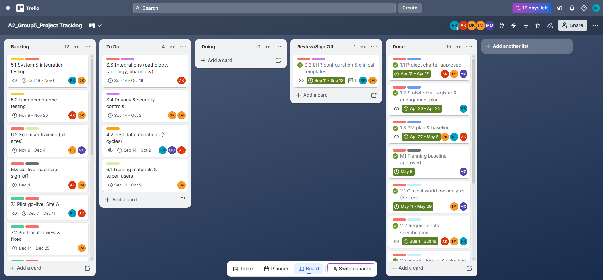
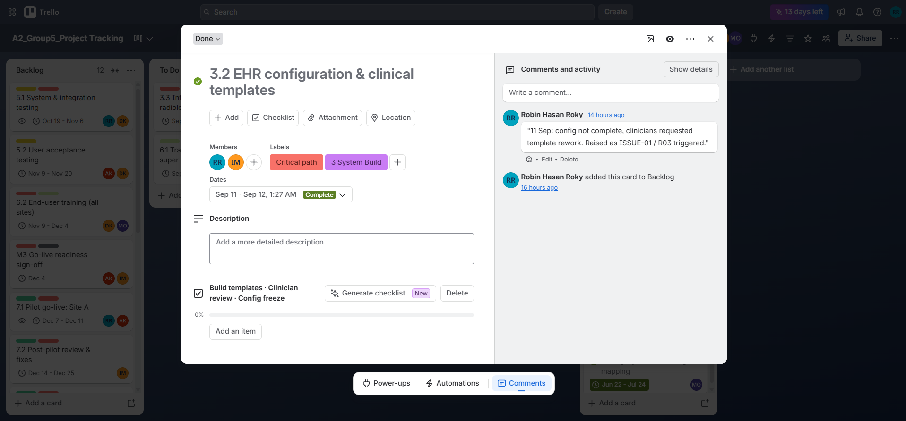
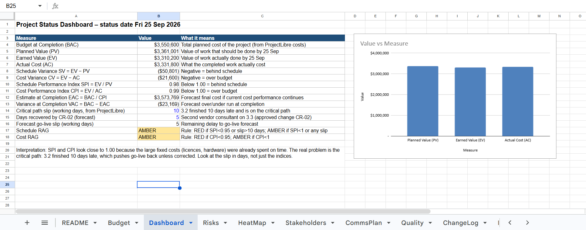

Tracking & Project Dashboard
Where is the project now, what went off plan, and what are we doing about it?
Trello Kanban board

Add screenshot: images/trello-status.pngWhat this shows
Each card is a WBS work package with ProjectLibre dates, owner, linked risks and a checklist. At 25 Sep, phases 1–2, 3.1 and 4.1 are Done, and 3.2 is in Review.
How it connects
Trello cards use the same codes and dates as the ProjectLibre baseline, so the board's progress feeds the earned value figures below.
Decision / implication
The board shows 3.3, 3.4, 4.2 and 6.1 still in To Do on 25 Sep. They should have started on 14 Sep, which is the first sign of the slip.

Add screenshot: images/trello-card.pngWhat this shows
The card's comments record the delay: 11 Sep rework requested, 18 Sep CR-02 raised, 25 Sep configuration complete, 10 days late.
How it connects
Links WBS 3.2 → risk R03 → ISSUE-01 → CR-02.
Decision / implication
Card history is our audit trail for the variance.
Status dashboard (earned value at 25 Sep 2026)
| PV | EV | AC | SV | CV | SPI | CPI | Schedule | Cost |
|---|---|---|---|---|---|---|---|---|
| $3.36M | $3.31M | $3.33M | −$51k | −$22k | 0.98 | 0.99 | AMBER | AMBER |

Add screenshot: images/dashboard.pngWhat this shows
The indices look close to 1.00 because the large fixed costs were paid on time.
How it connects
The real problem is on the critical path: EHR configuration (3.2) finished 10 working days late after clinicians requested template rework.
Decision / implication
Report the critical-path slip in days alongside SPI/CPI. The indices alone would hide this problem.
Issue log and corrective action
| ID | Raised | Issue | Priority | Impact | Owner | Corrective action | Status |
|---|---|---|---|---|---|---|---|
| ISSUE-01 | 11 Sep 2026 | 3.2 EHR configuration not complete: clinicians requested template rework | High | Critical path slips 10 working days; go-live at risk | Project Manager | CR-02 approved: second vendor consultant on 3.3; start 6.1 in parallel with 3.3 | Resolved 25 Sep 2026 (3.2 complete, 10 days late); schedule recovery in progress |
| ISSUE-02 | 29 Sep 2026 | Pharmacy system vendor late supplying interface specification | Medium | Part of 3.3 blocked; could erode the 5 days recovered | Integration Developer | Escalated to vendor account manager; build pathology and radiology interfaces first | Open – due 6 Oct 2026 |
| ISSUE-03 | 22 Sep 2026 | Site C training room unavailable in November | Low | 6.2 training at Site C may slip | Trainer | Book community clinic room; add online modules | Open |